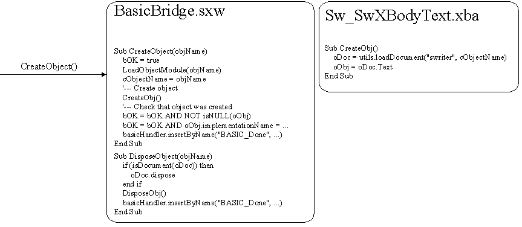
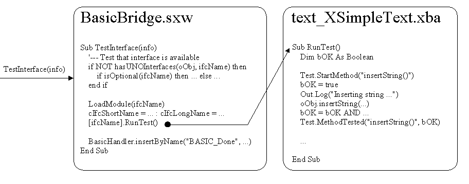
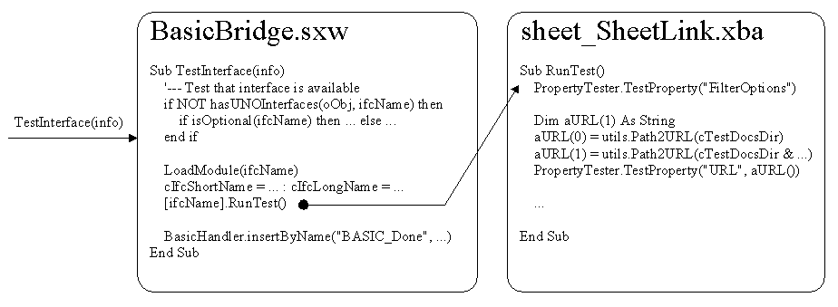

Source code for basic tests is stored in XML format in .xba files.
There is a separate file and folder for every interface/service and for every object. Files for objects contain BASIC procedures for creating and disposing objects. Interface/service files contain procedures for testing interfaces and services. These files are loaded on Runner's demand at runtime into the Office as BASIC modules, and required functions from these modules are executed.
The directory structure is similar to the one used for Java tests. Filenames should be unique in the whole scope. This is because basic module's name is exactly the same as a filename (without path). So the file for sw.SwXBodyText should be
.../basic/mod/sw/SwXBodyText/sw_SwXBodyText.xbaFor a service like XMLImporter which can be found in xmloff.Chart as well as in xmloff.Draw, the structure has to be
.../basic/mod/xmloff/Chart/XMLImporter/xmloff_Chart_XMLImporter.xba
To pass information between different BASIC modules, global variables are used. Some global variables are initialized by the Runner using the "SetValue" command. These variables are:
The Runner provides also information about object's implementation name, optional properties and methods.
All other global variables are set by BasicBridge.sxw or the by the tests. They are:
An object file should contain the procedure CreateObj() that will be called from the BasicBridge.sxw. In this procedure a global BASIC variable oObj has to be initialized with an appropriate object. If the object needs special code for destruction, it should be implemented in the DisposeObj() procedure. BasicBridge.sxw checks, if the object has been created properly. There is no need to do that yourself.

To test an interface, BasicBridge.sxw will call the RunTest() method from the appropriate .xba file. A test of every method that is supported by the interface should be implemented in this procedure. Before starting the method testing, a method Test.StartMethod(methodName) has to be called. This will produce some log information and, even more important, this will set the cCurrMethodName variable to an appropriate value (it is used for writing information in case of an exception). After the method was tested, a method Test.MethodTested(methodName, bResult) has to be used to tell the Runner about the result of the test.

Runner provides the BasicBridge.sxw with full information about the interface that should be tested. This information includes the name of the interface, the names of methods and information if anything is optional. This information is transformed to an array that is passed to the BASIC part of Bridge. This info contains also the type of the test (interface test or service test).
info[][][] - first array contains the name of the interface/service + the names of the methods/propertiesExample:
- second array contains boolean values (true, if interface/method/service/property is optional)
- third array contains the type of the test
[0] com.sun.star.... [0] true [0] interface
[1] get...() [1] false [1] <not set>
[2] set...() [2] false [1] <not set>
[3] ... [3] ... [1] ...
Usually testing of services is very simple - for every
supported property one just has to call the
PropertyTester.testProperty(propName) procedure, which changes
the value of the property automatically.
In some cases, the value of the property cannot be tested
automatically: if only
certain values are allowed or if the value of the property is not a
simple type.
Then an additional parameter can be passed to the testProperty()
method, an array of defined values. The property will be set to any of
those values.
If no parameter passed, PropertyTester will test
the property simply relying on the property's type.

For some tests it is required to have own helper implementations for
services, since it is not possible to implement own services directly
in BASIC.
For this one has to provide e.g. a Java class. A class that implements
the XSimpleServiceFactory interface and that can create an instance of
the required service should also be provided.
This ServiceFactory has to be inserted into the MultiServiceFactory of
the Office before connecting the BasicBridge.
These services can be created in BASIC using the
createUnoService(serviceName) method. For detailed information
look
at the
To run the Basic tests just start ./executeBasic -o
sw.SwXBodyText to execute SwXBodyText from sw module.
(confer the General User Guide)
As BASIC tests cannot be started separately from the Runner, there are some difficulties in debugging. The easiest debug method is to use message boxes around the code where the problem is located. Also you could use a debug file. Add to the configuration file 'basic.props' the following entry:
on UNIX: soapi.test.basic.debugFile=/temp/BasicDebug.log
on Windows: soapi.test.basic.debugFile=c:\\temp\\BasicDebug.log
In this file all information that BASIC sends to Java will be stored. To create output in the tests, use Out.dbg("My Message")
Follow these rules while writing basic tests:
Use option explicit
This option forces to dimension every variable that is used in basic code.
Headers
Headers in interface tests contain a special field named "required". If an interface needs some variables that should be initialized during the object creation, then the variables should be inserted into this field. It can be very helpful when writing objectCreation code.
Use functions from BasicBridge.sxw.
If there is something that should be done for many objects or interfaces then it is better to move this code to one of the modules of the BasicBridge.sxw (e.g. utils). This provides more flexibility.
During module loading all NON-global variables may be reseted. So, if you want to reuse a variable after a library was loaded, define it as global.
If some interface test requires a global variable that is an array of UNO structures, it should be defined as Variant and initialized using additional temporary variables of the appropriate type.
Please look through the following examples:
object file: sw_SwBodyText.xba
interface file: frame_XController.xba
service file: text_CellProperties.xba
Last modified: $Date: 2004/03/10 16:30:15 $